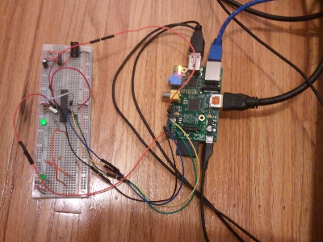

I had some free time so I decided to learn how to use the AVR microcontrollers.
I purchased an atmega328p microcontroller.
First I stripped a parallel port cable then I labelled every single wire through trial and error using inb outb commands on linux.
Eventually I connected the wires to the AVR and used the avrdude program to try and program it.
Anyway it failed. So I gave up for a few weeks.
|
|
Later when I tried again I purchased a usbasp programmer. I again hooked it up and tried to program it and failed.
|
|

|
Next I remembered I had a Raspberry PI computer lying around. Raspberry PI has a bunch of pins that you can use to send output and someone wrote a guide how to do that also avrdude supports this only you have to edit the avrdude.conf file to specify the particular ports you are using.
|
Anyway it didn't work but in the end I realized I needed a crystal since the AVR chip had been modified to use a crystal for some reason.
So the moral of the story is to connect a crystal to the AVR before programming it if you are doing this without an Arduino.

|
Tried to interface a USB keyboard through a USB->PS2 adapter to a PS2 port connected to the AVR and display output on an LCD (to make sure it's working). Unfortunately have failed. Looks like it is working but it gets keypresses wrong and I have to hold down the key for half a second before it registers.
|
Finally got a 2.4" TFT Display working. Kept having issues with the chip intermittently stopping communications with the display. Seems the SS pin of the AVR is an input by default and floats, and when the pin goes low due to noise or whatever the AVR drops out of SPI master mode, ruining communications between AVR and TFT Display. Finally fixed it after a google search and setting the SS pin to be an output. Ended up porting a library from Adafruit for the Display and am glad I did, since it comes with a bunch of fonts and functions for drawing pictures quickly that would have taken me maybe a year to write myself.
{kind=link}
{kind=link}